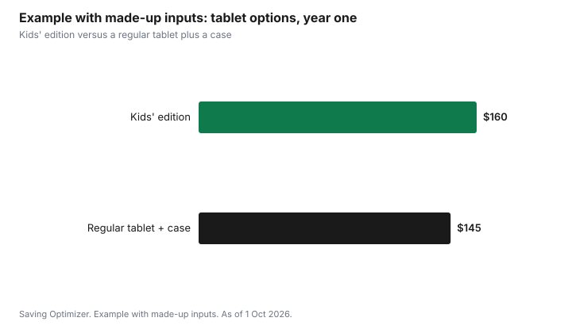

Technology · Canada
Tablets for Kids in Canada: What They Need, Kids' Editions and Refurbished Options
A tablet for a kid in Canada should be chosen by what the child will actually do on it, then by how well it survives a drop and what the warranty covers. For reading, video and simple games, an entry-level tablet is usually enough. A kids' edition bundles a protective case, a longer warranty and a content subscription, so compare it with a regular tablet plus a case. Refurbished tablets can cost less but read the grade and warranty. Whatever you buy, set up parental controls before you hand it over, and note when any included subscription starts to renew.
Key takeaways
- List the tasks first: reading, video, games, schoolwork, video calls. Ask the school before buying for schoolwork.
- Kids' editions bundle a case, a warranty and a subscription. Amazon's Fire Kids tablets carry a two-year Worry-Free Guarantee and an included Amazon Kids+ subscription that renews monthly after the included term.
- Refurbished tablets: read who refurbished it, the grade, the battery and the warranty.
- Costco does not extend the warranty on tablets, unlike TVs and computers. In Quebec, from 5 October 2026, new tablets carry a 3-year legal warranty of good working order.
- Example with made-up inputs: a kids' edition at $160 versus a regular tablet plus case at $145.
What the tablet needs to do
Write down what the child will use it for. Reading books, watching downloaded shows and simple games need little power. Video calls with grandparents need a working camera and microphone. Drawing apps work better with a larger screen. Schoolwork is different: ask the school whether a device is required, supplied or optional, and which platform it uses, before buying anything for that reason. The laptop specs guide covers when a laptop fits better.
Storage matters more than speed for young children, because downloaded videos and games fill it. Check whether the tablet takes a microSD card. A charger, a case and headphones sized for a child belong in the budget from the start.
Kids' editions versus a regular tablet
A kids' edition is a regular tablet sold with a thicker case, a longer warranty and, often, a content subscription. Amazon's Fire Kids tablets are an example sold in Canada. As of 1 Oct 2026, Amazon.ca lists them with a two-year Worry-Free Guarantee and an included Amazon Kids+ subscription. Amazon's terms say the subscription starts when the device is set up and then renews automatically each month at the applicable rate. Amazon Kids+ supports up to four child profiles and is aimed at ages 3 to 12.
The comparison is a regular tablet plus a sturdy case plus whatever warranty you would buy, against the kids' edition. If you would not pay for the subscription after the included term, put a reminder in your calendar to cancel it. The kids' app subscriptions guide covers the renewal trap.
| Feature | Kids' edition | Regular tablet |
|---|---|---|
| Case | Included, usually thick | Buy separately |
| Warranty | Often longer; Amazon Fire Kids lists a two-year Worry-Free Guarantee | Manufacturer warranty; check the length |
| Content | Often an included subscription that renews | Apps you choose; free and paid |
| Parental controls | Built into the kids' profile | Screen Time on Apple, Family Link on Android, or the maker's tools |
| Resale or hand-me-down | May be tied to the kids' profile set-up | Usually easier to reuse for an adult |
Refurbished tablets
A refurbished tablet can cost less than new and still carry a warranty. Read who refurbished it, the manufacturer or a third party, the cosmetic grade, the battery condition, and the warranty length and who provides it. Check the return window. The refurbished guide has the full checklist. A hand-me-down tablet from a family member is free, but reset it to factory settings and remove the previous account before setting up the child's profile.
Warranty and returns
New tablets carry a manufacturer warranty. Costco gives members a 90-day return window on tablets and free technical support, but its two-year warranty extension excludes tablets. Amazon.ca lets you return its own devices, including Fire tablets bought directly from Amazon.ca, within 30 days of receipt in new condition.
In Quebec, the Office de la protection du consommateur says that from 5 October 2026 new tablets carry a 3-year legal warranty of good working order, from delivery, in addition to the manufacturer's warranty. Before paying for a protection plan, count what you already have.
Parental controls before the handoff
Set up the child's profile, app approvals, purchase approvals and time limits before the tablet is wrapped. On Apple devices that is Screen Time with Family Sharing; on Android, Google Family Link; on Fire tablets, the Amazon Parent Dashboard. Turn off one-click purchases or require a password, so a game cannot charge your card. The Canadian Paediatric Society publishes screen-time guidance by age if you want a starting point. The first phone guide walks through the same set-up for a phone.
Example with made-up inputs: kids' edition or regular plus case
These numbers are an example with made-up inputs, not store prices. A kids' edition costs a made-up $160 with a case, a two-year warranty and a year of content. A regular tablet costs $115 and a sturdy case $30, for $145, with a one-year warranty. The regular option is $15 cheaper in year one. If the household would pay for the subscription anyway, or values the second warranty year, the kids' edition can come out ahead. If not, the regular tablet wins, and its subscription never needs cancelling.
| Option | Tablet | Case | Warranty | Year-one total |
|---|---|---|---|---|
| Kids' edition | $160 | Included | Two years | $160 |
| Regular tablet plus case | $115 | $30 | One year | $145 |

Sources
- Amazon.ca, Device Warranty for Fire Tablets and Worry-Free Guarantee (Two-Year Limited Warranty), as of 1 Oct 2026. Fire Kids tablets carry the two-year guarantee.
- Amazon.ca, Amazon Kids+ terms and help page, as of 1 Oct 2026. Included subscription starts at device set-up and renews monthly at the applicable rate; up to four child profiles; ages 3 to 12.
- Amazon.ca, Amazon Device Return FAQs, as of 1 Oct 2026. Fire tablets bought from Amazon.ca returnable within 30 days of receipt in new condition.
- Costco Canada, return policy and Technical and Warranty Service, as of 1 Oct 2026. 90 days for tablets; warranty extension excludes tablets.
- Office de la protection du consommateur (Quebec), warranty of good working order, as of 1 Oct 2026. 3 years for tablets from 5 October 2026.
- Every price in the example table and chart is an example with made-up inputs.
Frequently asked questions
What kind of tablet does a young child need in Canada?
For reading, downloaded video and simple games, an entry-level tablet with enough storage is usually enough. Add a sturdy case and set up parental controls. For schoolwork, ask the school whether a device is required and which platform it uses before buying.
Are kids' edition tablets worth it?
Compare the kids' edition with a regular tablet plus a case and any warranty you would buy. Amazon's Fire Kids tablets list a two-year Worry-Free Guarantee and an included Amazon Kids+ subscription that renews monthly after the included term, so set a reminder if you will not keep it.
Is a refurbished tablet OK for a child?
It can be. Read who refurbished it, the grade, the battery condition, the warranty length and the return window. Reset any hand-me-down tablet and remove the previous account before setting up the child's profile.
Does Costco extend the warranty on tablets?
No. Costco extends the manufacturer's warranty to two years on TVs, projectors, major appliances and computers, but its terms exclude tablets. Tablets still have Costco's 90-day return window and free technical support for members.
How do I stop a child making purchases on a tablet?
Set up purchase approvals before the handoff: Screen Time with Family Sharing on Apple, Google Family Link on Android, or the Amazon Parent Dashboard on Fire tablets. Require a password for every purchase.
Researched and drafted with AI assistance and fact-checked against official Canadian sources. How we create content.
Disclosure: Tablets and kids' editions are described as offer types; no brand or model is ranked. Saving Optimizer may earn a commission if a partner link is added later. No partnership is claimed. Education only.